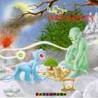
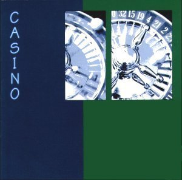
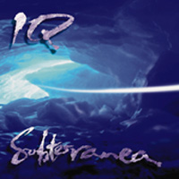
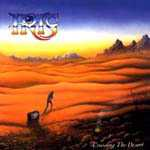

|
질문1
실뱅, 한국의 프로거들은 너를 IRIS라는 개인 프로젝의 리더
보다는) Arrakeen의 리더로서 기억하고 있는 것 같아...
Arrakeen시절의 너의 멜로딕 하고 파워풀한 기타와 Maiko(여성)의
다이나믹 하면서도 섬세한 보컬은 그당시의 수많은 네오 그룹들 중에서
도 눈에 확 뜨이는 것이었지..
괜찮다면, Arrakeen의 해체 이유 좀 말해줄래 ?
글고 Maiko는 지금 뭐 하고 있지...??
1. Some Korean proggers remember you as Arrakeen's leader than solo
artist(carreer) so far. Your powerful and melodic guitar sounds and Maiko's dynamic and delicate
voice made Arrakeen so specilal among the tons of the other neo-bands..
If you don't mind, could you say why is Arrakeen broken up and what is Maiko doing now ?
대답1)
Arrakeen은 여러가지 이유로 깨졌어...그중 하나는 마이코가
에고이스트였기 땜에,
같이 작업하기가 힘들었다는 이유도
있었지만,
진짜는 프랑스 뮤직 비지니스계에 실망했기 때문이야...우선 호응(response)도 부족했고,
결국 밴드를 그만두는 편이 좋을 것이라고 생각했어...
결국 마이코와 에릭(건반)은 음악을 그만 두기로 결정했지...이시기에 나는 상당히 당황 했었고,
영국으로 당분간 이주했지..:
정말로 나는 프랑스의 뮤직 비지니스계에 완죤 실망했어..
마이코는 지금 심리학 전문간호사가 되어있어...내가 알고 있는한
그녀는 더이상 노래를 안 할 거야...
Arrakeen split up for different reasons, one of it was Maiko getting
difficult to work with because of ego problems, but the main reason is
because some members of the band were disappointed of the lack of response from the music business in France, and preferred to stop.
Maiko and Eric Bonnardel( Keyboards) feared they would not manage to
make a living out of Arrakeen after all, and decided to give up making
music. When it happened I was rather upset and decided to live England
for a while. : I was myself quite pissed off with the music business in
france. Maiko is now working as a specialised nurse in Psychology. As far as I
know, she doesn't sing anymore and completely stopped making music.
질문2)
나는 네가 참여했던 모든 음반들을 들어 봤어..모자잌 앨범 빼고..
특히,
그중에서 나는 올-스타 프로젝 앨범
CASINO를 정말 좋아해..
내 생각에 카지노 앨범은 90년대 초반 네오 프로그계의
'마스터피스'라고 생각하는데 말이지.....맞어..Geoff Mann의 목소리를 더이상 들을 수 없다는 건 정말 유감스런 일이야..
살아있었다면,
현재 Fish하고 치열한 라이벌전을 벌였을 텐데..
그나저나,
이앨범의 마지막 트랙(Beyond that door)
기억나 ?특히,
미들하고 엔딩부분의 Geoff의 읆조림과 상승하는 기타...들을때마다 날 사정없이 죽여버리지...여기서의 솔로 네가 한 것 맞어
?! 맞지..그치 그치!
어떻게 그런 'great'한 멜로디를 만들어 낼 수 있지.?
글고 너는 주로 어디에서 영향을 받았니? (뮤지션,
그룹 아무거나 좋아)
2. I have your all cds except "Mosaic".Especially I like all-star project album CASINO(s/t).
I think this album is masterpiece in early 90 neo-prog scene. Yeap...It is regretful that we can't hear no more Geoff Mann's voice.
I guess if Geoff Mann is alive, he seems to be good rival with Fish incurrent prog scene. In CASINO, especially middle and ending part of last track 'Beyond that
door' have been killed me whenever listen..
Did you solo playing this track.? right ?
Could you tell me how can you make great melody like this? also, where do your main influences came from ? (musician, group, anything)
답변 2)
그래,
맞어..
그 부분 내가 연주했지...
칭찬해 줘서 고마와..
That's right, it is me playing there.....Thank you for this compliment !
어디서 영향을 받았는지 대답하기는 정말 힘들어..하지만 진실(truth)에 대해 말하자면,
모든것은 영감(inspiration)에 있다는 사실이야....:음악의 편린(piece)들이 나에게 영감을 주는 것일 수도 있고
내가 그 음악의 편린들을 연주하는 순간에 영감을 받는 것일 수도 있고
말이지....(주:원문참조하세요...)
또한 그렇게 좋은 멜로디를 만들어내고 연주할 수 있다는 것은
얼마간의 "know how"와
"경험"도 중요하다고 생각해..그러나 정말 중요한 것은
"Inspiration"이야...
그러한 영감이 어디서 오는줄 누가 감히 알 수 있을 까?!!!!
It is difficult for me to answer that question because the truth is:
it's all about inspiration: Whether a piece of music inspires me or not
and whether I feel inspired at the moment I play that piece of music.
I suppose there is also a bit of "know how" and experience. But, truly,
the main thing is inspiration. And who knows where it comes from ?
나의 음악적 영향에 대해 얘기하자면,
피아노를 가장 먼저 연주했지...어렸을 때 부터 오랬동안 클래식 피아노를 연주했었어..해서, Beethoven, Mozart, Schubert, Debussy,
Ravel, Satie 등과 같은 클래식 작곡가들로부터도 영향을 받았지...롹에 있어선, Beatles, Genesis, Pink Floyd, The Police,
Peter Gabriel, 그리고 초기 Dire Straits를 좋아해....
기타연주만 놓고 본다면, David Gilmour, Eric
Clapton, Ian Crighton (of Saga), Van Halen 등에게서 영향을 받았지만,
아마도 지금 기억 안나고 있는 다른 연주자들도 있을거야..
As for my influences, well I started with the piano. I played classical
piano for a long time from when I was a child; So I've got classical
influences with composers such as Beethoven, Mozart, Schubert, Debussy,
Ravel, Satie etc. In Rock music I 've been influenced by various bands or artists from The
Beatles to Genesis, from Pink Floyd to The Police, Peter Gabriel, early
Dire Straits.
As for pure lead guitar playing I would say David Gilmour, Eric
Clapton, Ian Crighton (of Saga), some hard rock players such as Van
Halen..I am probably forgetting some people here..
질¹® 3)
음..나는
Marillion, IQ,
그리고 YOU같은
NEO 사운드를 즐겨
듣곤 해....
그러나,
많은 progheads들이
neo-progish한 사운드를 싫어한다는
것에 대해선 인정할 수 밖에 없을 것 같아...
너는 'Neo-Progressive'의 정의가 무엇이라고 생각하니?
그리고 '실뱅은 네오 아티스트야'라는 말을 들으면
기분이 어때? (주: Roine에게 보내는 신인철님의 질문을 인용했음)
3. Well, I used to listen NEO like Marillion, IQ and YOU..
But I have to admit some of progheads hate neo-progish sound. ;-(
What do you think NEO-progresive's definition and
how do you feel to hear that Sylvain is neo prog artist...?
답변 3)
음..우선 먼저 나는 뭐에 대해 정의를 내리는 것에 대해선
그리 뛰어난 자질을 갖고 있진 않아..인정할께..; 특별히 나의 음악에 국한시킬때는 말이지..
하지만, 나는 'neo'라는 단어를 나의 음악에 적용하는 것을
좋아해(like)..
나는 'neo'라는 단어에서 'flattering'한것을 느껴...(주:flattering : 아첨하는, 좋게보이는, 유망한.....)
나는 주어진 음악 스타일을 고집하려는 것은 아니고, 단지 내 자신을 표현(express)하고, 전달(communicate)하려고 노력하는 것이라
말하고 싶어..좋은 음악이란, 매우 드물긴 하지만 영감을 줄 수 있고, 이와 같은 의미에서 완성되었을 때, 그리고 뭔가(something)를 표현할 수 있고, 음..또는
튠(tune)속에서 모든 것(all things)을 느낄 수 있도록 만드는
뭔가(something)을 전해줄 수 있을 때만이
가능하다고 생각해..
나는 다양한 음악 스타일을 듣고 여러 측면에서 느끼고자
했을 때 위대한 작품들을 찾을 수 있으리라 믿고 싶어..
개인적으론, 'new' 스터프와 'old' 스터프 모든 것을 좋아해....
사운드가 'new'이어야 한다는 것이 필요조건이라고 생각지 않아...왜냐면, 그동안
음반이 팔리는 마켓에 대한 경험도 중요하다는 것을 배울 수 있었고, 화사하고 값비싼 사운드와 패키지(슬리브 등등)로 포장되어 있다 한들
영감의 부족과 음악의 정직함은 숨길 수 가 없는 것이거든...
중요한 것은 사운드 단지 락큰롤이고, 우리는 바로 그것을 좋아하는거야...
(정말 멋진 뮤지션이죠...)
I must admit I am not very good for definitions; especially when it
comes to my own music...However I like the word 'neo' applied to it, I
find it flattering....I am not trying to stick to a given style of music I am only trying to
express myself, to communicate. I feel that music is good when it's inspired (which is rare) and well
done (ditto), when it expresses something or communicates something that
somehow makes you feel in tune with all things. And I believe you can find great works of music under many different
styles or aspects.
Personally, I like all kind of stuff, I like 'new' stuff and I like
'old' stuff. I feel it doesn't necessarily matters if it 'sounds' new: I learned to
be cautious about the way music is marketed: sometimes some bright and
apparently expensive sound or packaging (sleeve, etc.) can hide a lack
of inspiration or honesty But, of course, that'S only Rock'n Roll..
질¹® 4)

와우,
마릴련의 Pete와
Ian이 함께
참여한 IRIS 프로젝은 정말
캡이었어..이안과 피트의 리듬 파트는 마릴련의 그것보다
훨씬 공격적이고 파워풀 한것이었다고 생각해...
실뱅,
마릴련 멤버들하고 친해?
그렇다면 정말 부러워..
마릴련 멤버들하고 다시 연주할 계획은 없어
?
나는 너와 Steve Rothery와의 트윈 솔로를 다시 듣고 싶은데 말이야...
(주:Arrakeen의
Patchwork 앨범에 마지막 라이브 트랙에서
Steve Rothery와 트윈 솔로를 연주했음)
4. Wow, IRIS project featuring Pete and Ian is really fantastic..
Ian and Pete's rythm part seems to be more aggressive and powerful than
Marillion's.
Do you familiar with marillion members ? If you so, I envy wth you..^^
Have you any plan to work with marillion's members in near future ?
I wanna listen your twin solo playing with Steve 'Heavy' Rothery again..^^
답변
4)
음..매우 친하지..적어도 영국에 있었을 때..
우리는 가끔 전화연락도 해...그리고 그들이 투어할 때는
만나기도 하지..
원래 Pete는
IRIS의 두번째 앨범에도 참여하기로 했었는데,
교통사고가 나는 바람에 캔슬되 버렸어..
(주:
한 10개월전
Pete는 교통사고를 당했음..물론 지금은 완쾌)
지금 당분간은 마릴련 멤버들간의 조인트는 불투명해...
Yes, I am quite familiar with Marillion members. Or at least used to be
during my time in England.
We still speak to each other on the phone from time to time or meet when
they are touring. Pete was interested in playing on the next IRIS album but that was
before his accident. So I don't know if I will work again with any of
them in the future. It's not planned for the moment being...
질문
5)
실뱅,
너는
IRIS의 앨범에서 모든 멜로딕 파트를 맡아서 연주했지...
너도 알다시피,
현재의 프록 신에는 너같은
mutiple player가 쫌
있잖아...
Roine Stolt(TFK), Gary Chandler(JADIS), Nick Barret (PENDRAGON), Steve Wilson(Porcupine Tree)
등등 말이야...이중에서 플라워 킹스 사운드는 들어 봤니?
Roine Stolt는 어떻게 생각해
?
5. In 'Crossing the desert' you were charge of all melodic part.(key,
guitar) As you know, there are some artists like multiple player like you...
Roine Stolt(TFK), Gary Chandler(JADIS), Nick Barret(PENDRAGON), Steve
Wilson(Porcupine Tree) Did you listen The Flower King's sound.? and How do you think about Roine
Stolt ?
답변 5)
Yeah..플라워 킹스 무지무지 좋아해..
가끔 그들의 앨범 'Stardust we are'앨범을 연주하곤 해..
그리고 즐기지....또.. Porcupine Tree의 몇몇 작품들도 무지 좋아해..
Yeah, I like it very much. I play the album 'Stardust we are' from time
to times and enjoy it.
I also like very much some of the Porcupine Tree's work.
질문
6)
그나저나, Arrakeen과 IRIS의 슬리브 디자인에서 똑같은 마스코트를
발견했는데 말이야..동물 맞나..맞어? 얘는 뭘 의미하지..?
6. BTW, I can see the same mascot in IRIS and Arrakeen's cover design..
Could you explain what is this animal(right?) or What does this mean ?
Que
signifie IRIS, pourquoi ce nom ?
답변 6)
음..동물 맞어..걔는
'Le Fourreux'라는 이름을 갖고 있는
프랑스 고대 환상 코믹 캐릭터야...
'Le Fourreux'는 특별한 마법의 힘과 매우 신비스러움을 가지고 있지..그 캐릭터는
Regis Loisel (a comic artist)에 의해서 만들어 졌고..Arrakeen시절 정말로 팀의 마스코트 였어..
IRIS 슬리브에도 나타낸건,
나의 과거 Arrakeen에 대한
풍유적인 리퍼런스야.....
This animal is a French heroic fantasy comic character called: 'Le
Fourreux' it's got special magical powers and is very mysterious...It has been created by Regis Loisel (a comic artist).
It was indeed ARRAKEEN's mascot. On the Iris sleeve It's an allegoric reference to my past in
Arrakeen...
질문
7)
나는 jay에게서 네가 현재 IRIS 2집 녹음중이고 프랑스내에서
기그 중이라 들었어...
IRIS 2집에 대해 얘기 좀 해줘(컨셉,주제,멤버,발매일, 뭐 아무거라도 좋아..)
그리고 너의 목소리도 상당히 궁금한데 말이지...
담 앨범에 너의 목소리를 집어 넣을 생각은 없어..?
아니면 FISH같은 게스트 보컬은 어때...?
그러나, 솔직히 말하자면,
너의 연주만으로도 사운드가 넘 풍성하기 땜에
어떠한 보이스도 필요없다고 생각해...
7. I heard from jay that You're recoding for IRIS 2nd album and playing for
some gigs..
Could you tell me current status of your next album ?
(Concept, theme, member, release date, anything is ok) Also, I am very curious about your voice.. ^^
Do you have any plan to include your voice in next projet ?
or How about inviting guest vocal..like F I S H ? or rejoining MAIKO..?
Frankly to speak, You don't need any voice because your melody is very
abundant.
답변 7)
고마워..
담 앨범에서 몇몇 보컬 매트리얼도 만들어 놨고 ..실렸으면 해...아마도 몇곡의 보컬이 들어간 곡과 연주곡으로 꾸며 질꺼야..내 목소리에 대해선 직접 'singing'하는 것 무지 좋아해...
내 목소리를 새음반에 녹음한다는 건 정말 익사이팅하고 새로울 것
같애
음...그리고..
아직 게스트 보컬리스트에 대한 생각은 없지만, 필요하다고 느껴지면
초청해야 겠지...
모든 매트리얼은 이미 다 쓰여졌고, 데모도 끝난 상태야..그러나 지금 현재는 다른 프로젝트의 프로듀서로 있기 땜에
레코딩은 쫌 연기된 상태고, 아마도 2000년 언젠가엔 발매될 수 있을 꺼야...
Thank you for this remark. The thing is: I also have written some vocal material and I would love
to see it released on the next IRIS album. So this album will be a
mixture between some vocals and some new instrumental pieces. As for the voice I quite enjoy singing my own songs, and it will be a
new and exiting challenge for me to record that on an album.
I haven't thought yet of any guest singers but that is always a possibility if I feel a song needs it....
All of the material is already written and demoed. I had to postpone the recording a few times because I am also working as
a producer on a different project.
So hopefully the next IRIS album will be recorded and released sometimes
in 2000.
질문 8)
누구랑 연주하고 싶어..기타 포지션은 네가 디폴트야..
best line-up을 채워봐죠..그리고 다른 악기를 쓴다면
?
8. Who do you want play with ? let me know your best line-up..
Guitar : Sylvain
Voice :
Key :
Drum :
Bass :
Any other instrument : ?
답변 8)
Guitar : Sylvain
Voice : Peter Gabriel, Freddie Mercury, Jon Anderson, Sting,
PaulMcCartney
Key : Tony Banks, Alain Antonelli
Drum : Stewart Coppeland, Vinnie Colaiuta, Simon Philips, Ian Mosley
Bass : Pete Trewavas, Chris Squire, Sting
Any other instrument : Guitar: David Gilmour (데이빗 길모와 트윈을....)
질문 9)
인터뷰에 응해줘서 고마워, 실뱅....
한국에도 너의 팬이 있다는 걸 잊지 말아죠..
계속 훌륭한 작업도 해주길 바래..
마지막으로 한국의 프로거들 특별히 예바동에
인사말 좀 해 주겠어...
9 Thanks for interview, Sylvain..
Don't forget there are some of your fans in KOREA Please Keep up the great work.
Last, Would you say "HELLO" to korean proggers, especially Korean Art Rock Club,
YEBADONG.? I hope to see your gig in SEOUL in near future
답변 9)
Yeah I'd love to.
Hello to all of you music lovers of YEBADONG.
I hope to see you one day in concert in Korea !
In the meantime keep on listening to IRIS....
|